체험 구성안
4층 여섯 개 체험의 공간 구성과 관람 흐름입니다. 공간의 틀은 전시 기획안의 4층 평면도와 존별 구성을 따랐고, 벽면 이미지와 소품은 각 장소가 실제로 존재했던 당시의 사진·회화·인쇄물로 채웠습니다. 체험별로 공간 시각화, 체험 플로우, 근거 자료와 소장처를 함께 정리했습니다.
평면도에 축척 표기가 없어, 공간 치수는 에스컬레이터 길이를 기준으로 역산한 추정치입니다. 실측 도면을 받으면 같은 구성으로 치수만 갱신합니다.


공간 구성
4층 B 위치의 방(약 4.0×6.5m, 천장 4.2m 추정)을 1873년 살롱이 열린 팔레 드 랭뒤스트리의 전시벽으로 꾸밉니다. 버건디 벽, 바닥부터 천장까지 2~3단으로 액자를 촘촘히 거는 살롱식 걸기, 상단의 천 차양, 금박 액자가 기준입니다. 벽에는 1873년 살롱 실제 출품작을 함께 겁니다.
후보작 5점은 한 벽에 나란히 걸고, 특별 액자와 1~5 번호, 작품 라벨, 스포트라이트로 구분합니다. 입구에는 "LE SALON DE 1873" 안내판을 둡니다.
체험 플로우
- 심사위원 입장살롱 입구의 QR을 찍으면 "당신은 오늘의 심사위원입니다" 화면과 당시 심사 기준 7가지가 열립니다.
- 후보작 비추기특별 액자의 그림을 앱 카메라로 비추면 그림이 인식되고, 화면 아래에 해설과 심사 기준에 맞는 점·어긋나는 점이 나옵니다.
- 올해의 그림 선정한 점을 선정합니다. 다른 그림을 고르면 실제 심사평이 나오고 다시 고를 수 있습니다.
- 결과메르송 〈환상〉을 고르면 이 그림이 1873년 살롱 1등급 메달작이었다는 사실이 공개됩니다.
수집품 올해의 그림 — 메르송 〈환상〉, 1872
공간 근거 자료
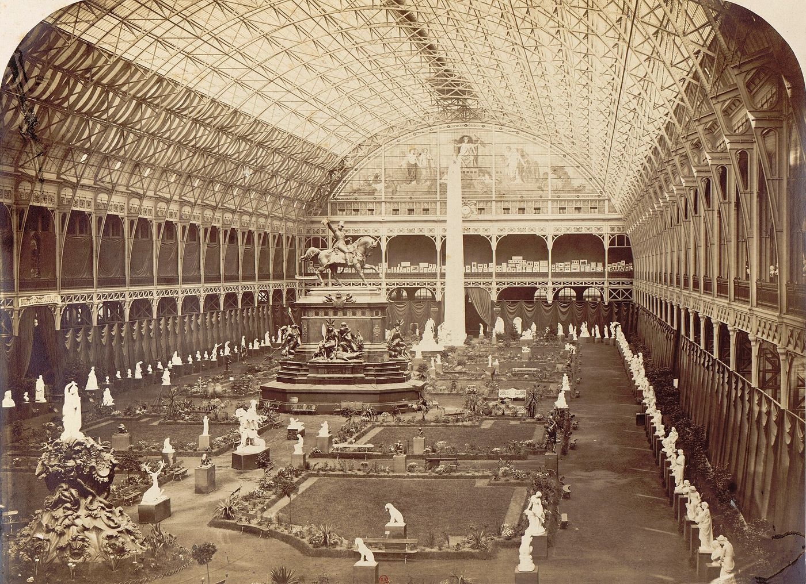
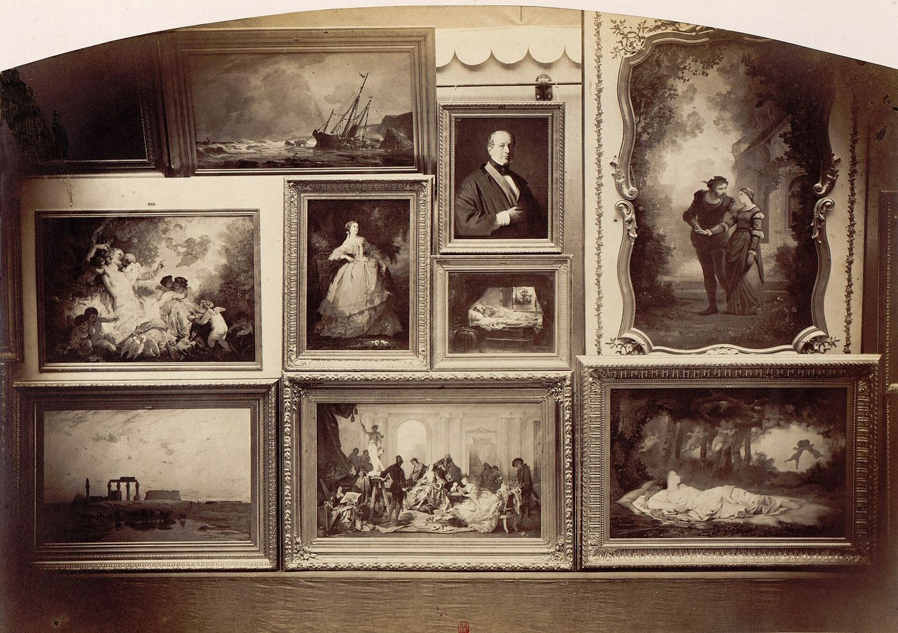
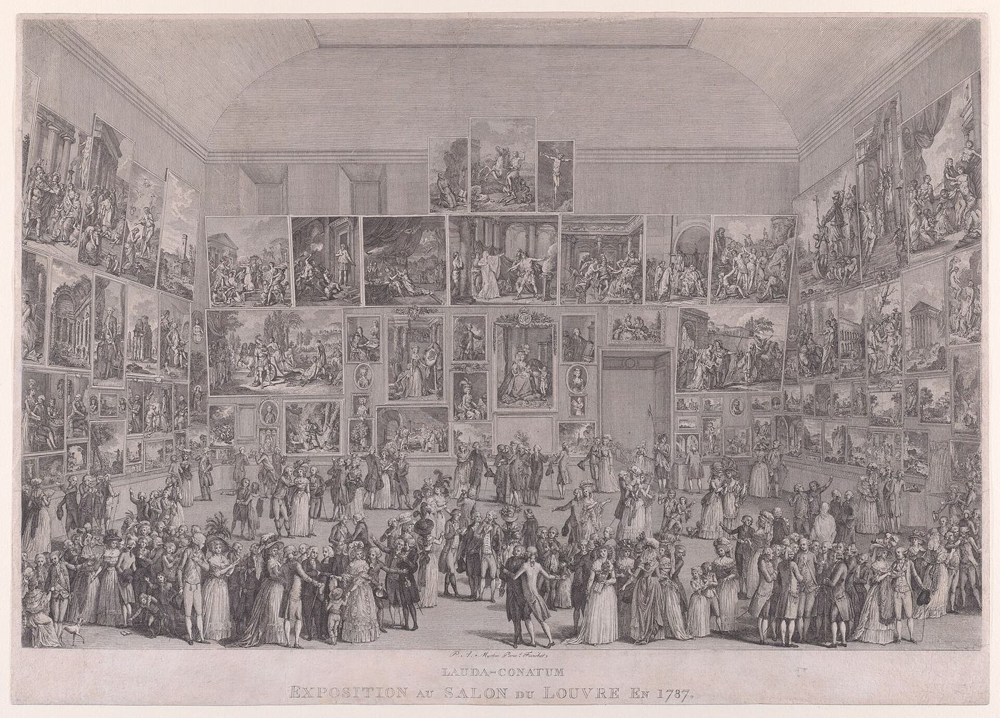
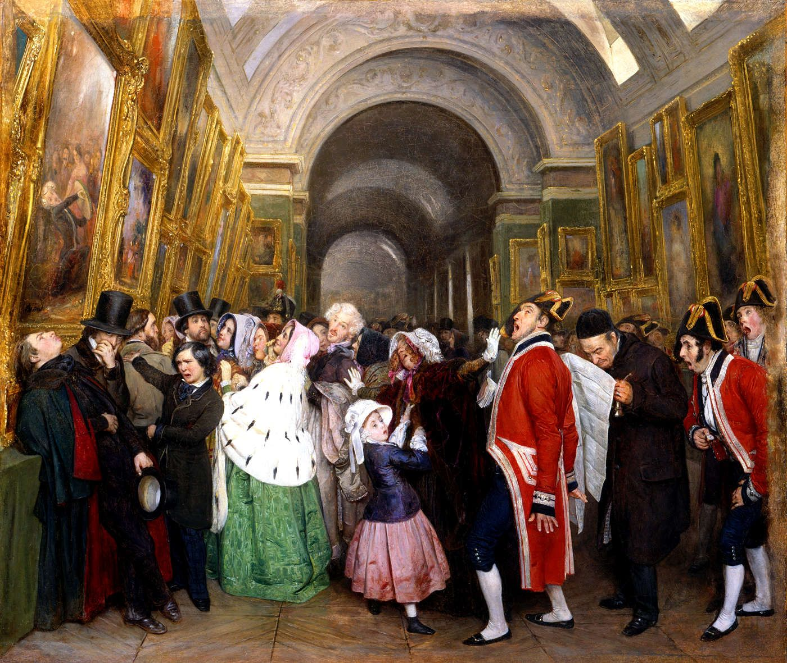
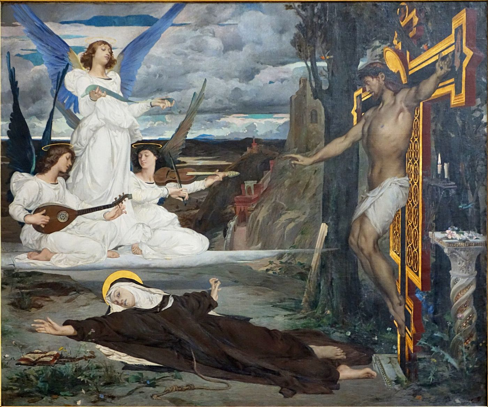
변화의 복도


헤리티지 건물의 흰 홀을 따라 부스 네 개가 가벽을 공유하며 나란히 섭니다. 부스는 복도 쪽 앞면이 열려 있어 관람객이 걸으며 안을 들여다보고, 가벽은 관람객 시선보다 높게 세워 한 섹션을 다 본 뒤 다음 부스로 넘어가게 합니다. 부스마다 색감, 가구, 조명을 다르게 합니다(부스 약 4.25×2.8m, 가벽 3.6m 추정).

공간 구성
부스 안쪽 벽은 카페 게르부아의 정면 세트입니다. 줄무늬 차양, 따뜻한 빛이 새는 유리창, 앞쪽의 대리석 테이블과 의자로 바티뇰파가 모이던 카페를 재현합니다. 옆 벽은 1867년 만국박람회 그림(마네)을 크게 출력해 채웁니다.
부스 앞 모서리에는 1876년 파리의 실물 모리스 칼럼을 실제 비율로 세웁니다. 짙은 녹색 도장, 상부 돔과 첨탑, 공연 포스터가 겹겹이 붙은 몸체가 기준이며, 앱에서 열어볼 수 있는 전단지 6장을 앱과 같은 위치에 실물로 붙입니다. 칼럼 높이는 실물 비율로 약 4.8m입니다.
체험 플로우
- 칼럼 스캔앱 카메라 화면에 모리스 칼럼의 외곽선이 점선으로 나옵니다. 실제 칼럼을 점선에 맞추면 인식되고, 화면이 3D 칼럼으로 바뀝니다.
- 칼럼 둘러보기3D 칼럼을 손으로 돌리고 확대합니다. 열어볼 수 있는 전단지 6장(카페 게르부아, 봉 마르셰, 만국박람회, 도미에 풍자화 3장)은 압정과 테두리로 구분됩니다.
- 전단지 떼어보기전단지를 누르면 칼럼에서 떼어져 화면 가운데에 떠오릅니다. 종이를 돌려보고 확대할 수 있습니다.
- 삽화 애니메이션떠 있는 전단지 위에서 삽화에 색이 서서히 입혀지고 인물이 움직입니다. 닫으면 전단지가 칼럼으로 돌아가고 다른 전단지를 이어서 볼 수 있습니다.
수집품 모리스 칼럼 전단지
공간 근거 자료
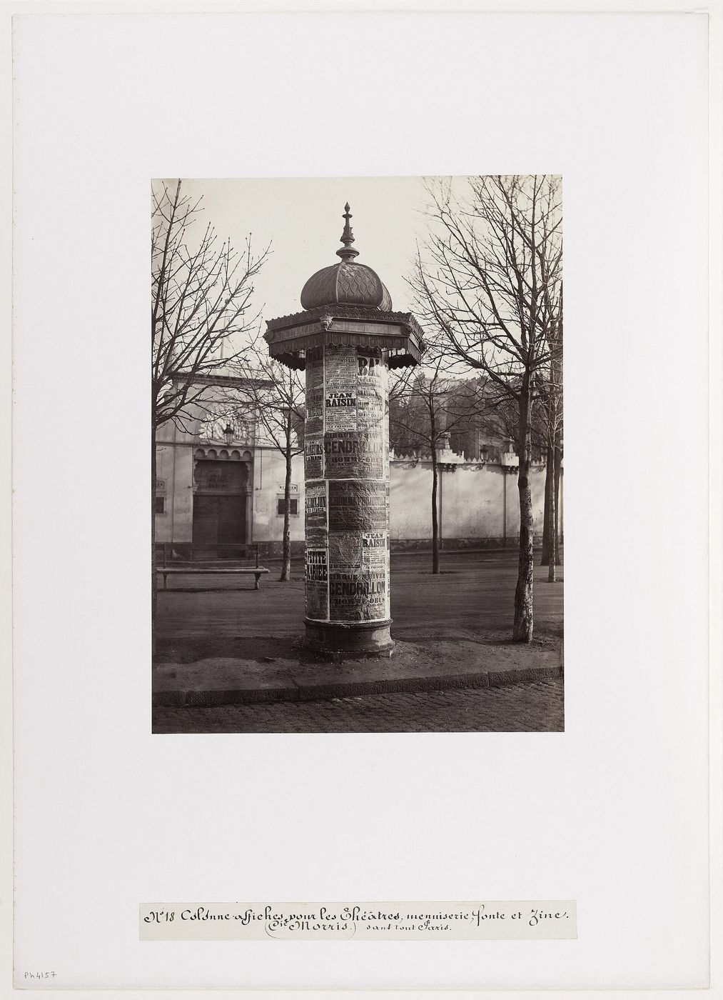
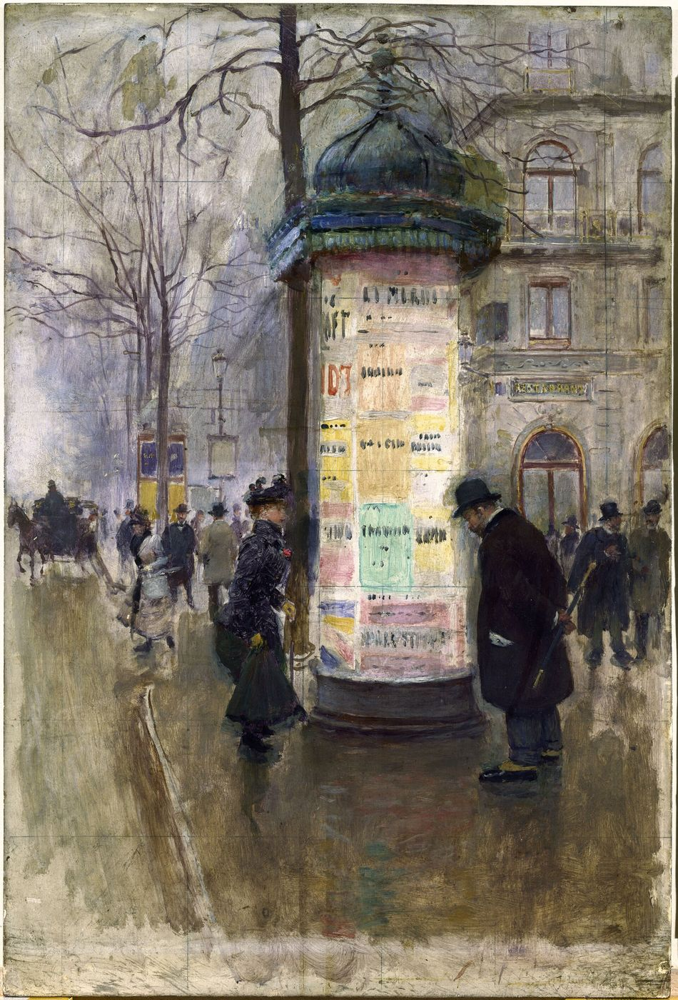
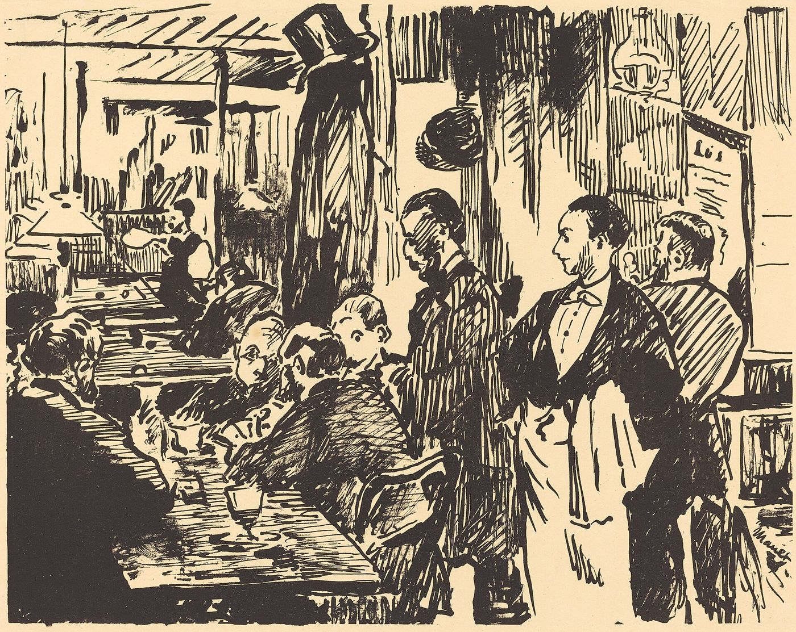
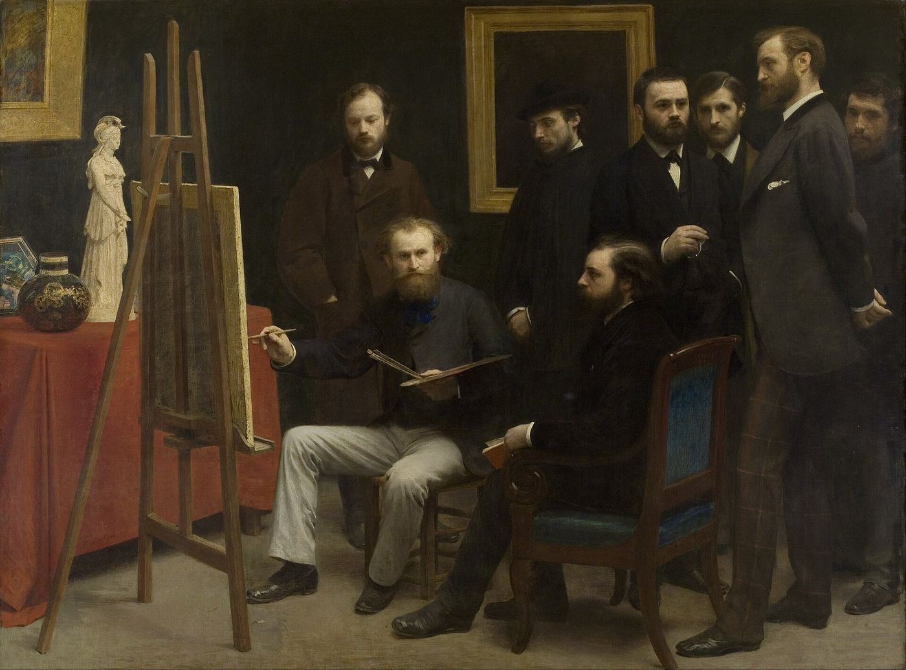

공간 구성
나무 판넬로 마감한 사업가의 방입니다. 정면 아치창 너머로 모네 〈생라자르역〉이 창밖 풍경처럼 보이고, 그 앞에 녹색 가죽 책상을 둡니다. 책상 위에는 지구본, 램프, 시계, 책과 함께 단서 소품인 서부철도 시간표(파리–루앙–르아브르), 신문 광고, 에트르타 엽서를 놓습니다.
벽에는 1879년 서부철도 해수욕 열차 포스터(운임표 포함)와 1887년 디에프 포스터를 핀으로 꽂고, 옆 벽에는 1870년 서부철도 노선도를 크게 겁니다. 입구 쪽 벽에는 설명 텍스트와 미션 QR을 둡니다.
체험 플로우
- 체험존 관람산업혁명 시대를 재현한 공간을 자유롭게 관람합니다.
- 단서 찾기벽면 그림, 신문 광고, 시간표, 엽서에서 다음 목적지에 대한 단서를 찾습니다.
- 출발역 고르기QR로 퀴즈를 열고, 파리 지도 위 실제 위치에 놓인 출발역 5곳(생라자르·북역·동역·리옹역·몽파르나스) 중 하나를 고릅니다.
- 도착 지역 고르기도착 지역 5곳(노르망디·북부·샹파뉴·프로방스·브르타뉴) 중 하나를 고르면 노선이 지도에 그려집니다. 앱에서도 현장 단서를 다시 펼쳐볼 수 있습니다.
- 결과생라자르 → 노르망디가 정답입니다. 다른 조합을 고르면 그 역이 실제로 어디로 가는 노선이었는지 알려주고 다시 고를 수 있습니다.
수집품 노르망디행 기차표
공간 근거 자료
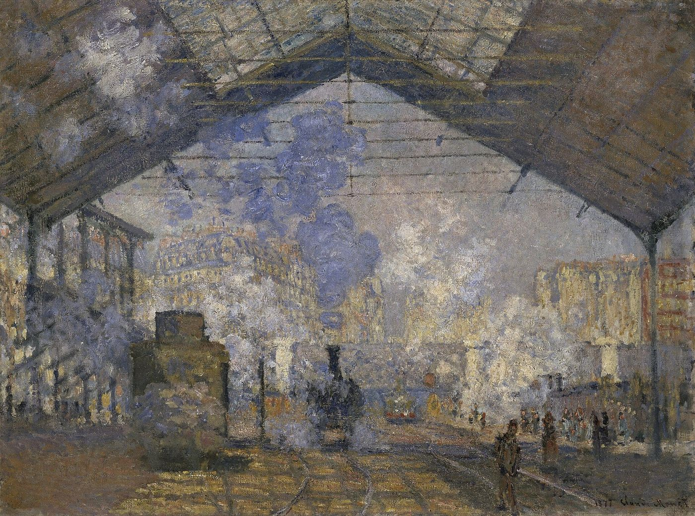
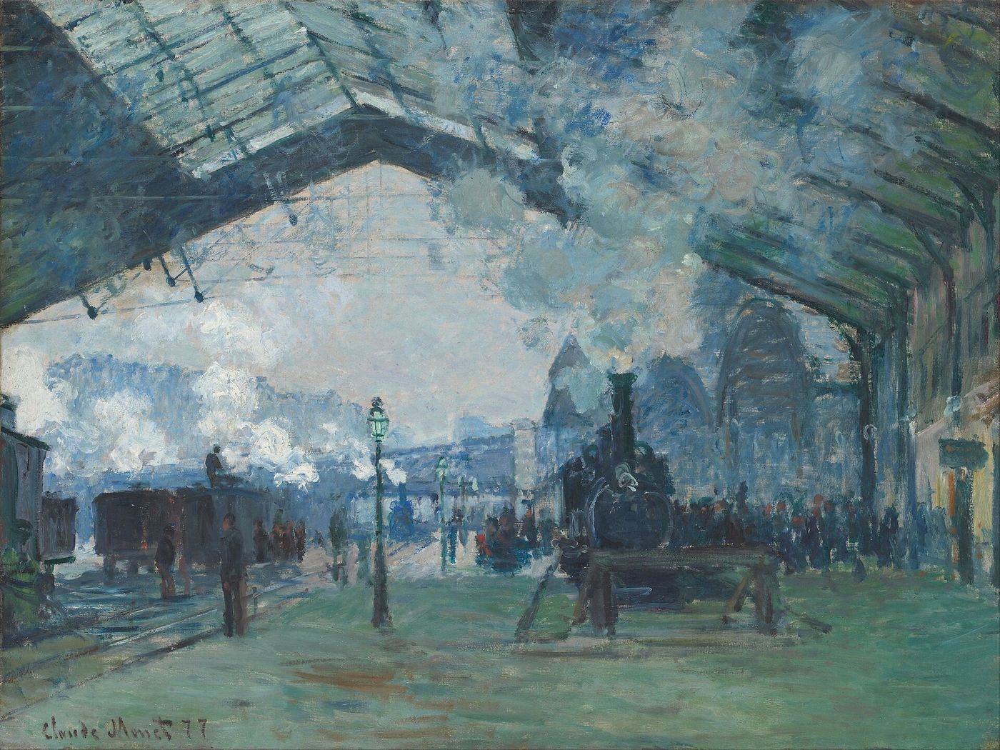
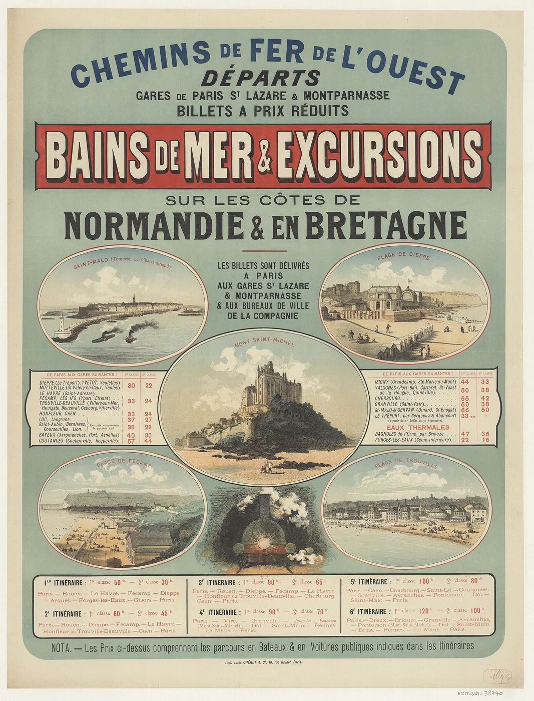
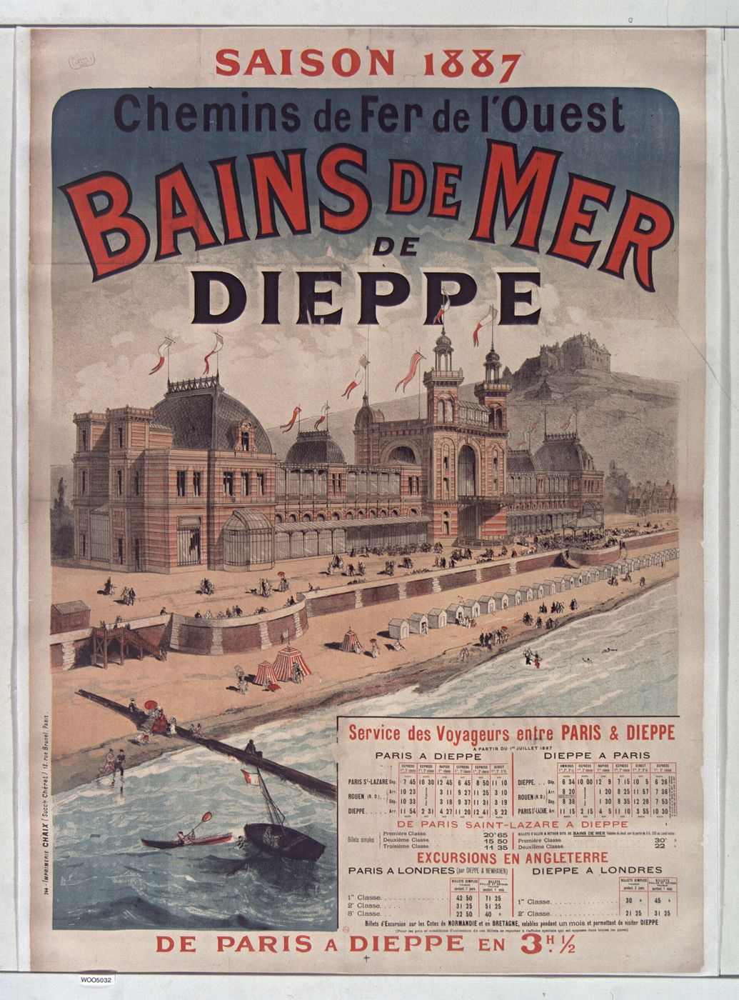
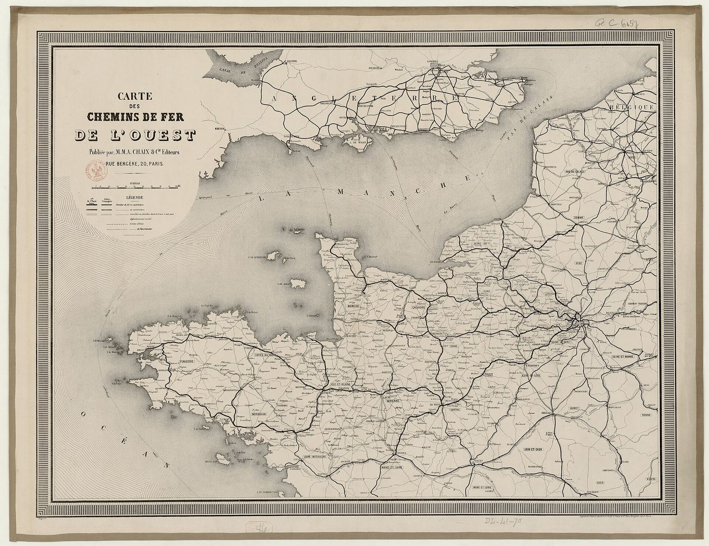

공간 구성
부스를 반으로 나눠 왼쪽은 햇빛이 드는 야외 작업 공간, 오른쪽은 어두운 실내 아틀리에로 꾸밉니다. 야외 쪽 벽은 르누아르가 그린 1873년 모네의 작업 장면과 모네의 1865~66년 야외 대작으로, 실내 쪽은 짙은 벽과 나무 마루로 구분합니다.
오브제는 9종입니다. 실내 쪽에 돼지방광 물감, 대형 이젤과 실내 캔버스, 안료병과 절구, 오일램프, 일기장(힌트)을, 야외 쪽에 접이식 의자, 휴대용 이젤, 튜브물감 박스를 둡니다. 튜브물감 박스는 1870년대 실물 물감 상자를 기준으로 재현합니다. 두 공간 사이에 미션 안내판을 세웁니다.
체험 플로우
- 질문 열기QR을 찍으면 "화가를 야외로 이끈 것은 무엇이었을까요?"라는 질문이 열립니다.
- 오브제 비추기오브제를 앱 카메라로 비추면 인식되고, 그 물건이 화가의 작업에 어떤 의미였는지 정보가 나옵니다.
- 일기장 힌트일기장을 비추면 1870년 화가의 일기가 열려, 실내에서 기억에 의지해 그리던 한계를 알려줍니다.
- 정답튜브물감 박스를 찾으면 정답입니다. 금속 튜브 덕분에 물감을 들고 야외로 나갈 수 있게 된 이야기가 공개됩니다.
수집품 튜브물감
공간 근거 자료
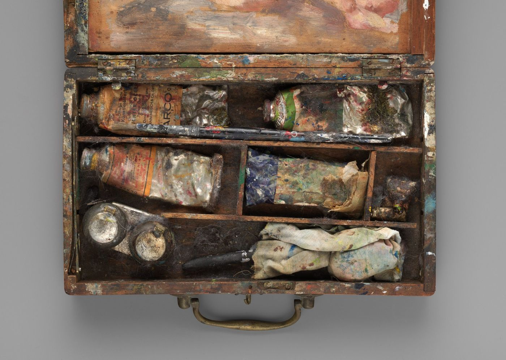
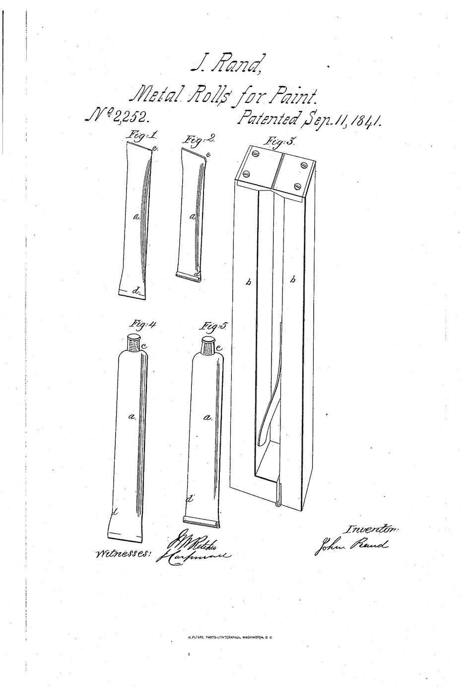
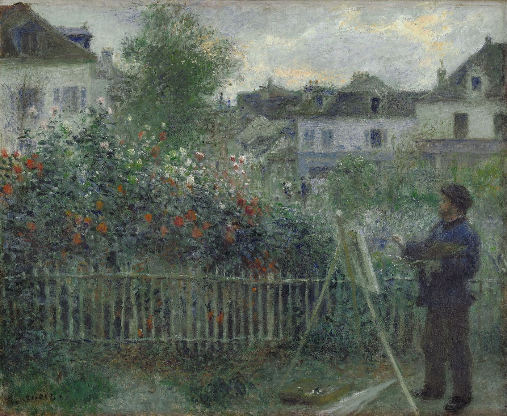

공간 구성
안쪽 벽은 카퓌신 대로 35번지 나다르 사진관의 정면입니다. 아치창 세 칸과 'Nadar' 간판, 주소 명판을 달고, 창 안쪽은 배경막과 커튼이 비치는 스튜디오로 꾸밉니다. 이 건물은 1874년 첫 인상파 전시가 열린 곳이기도 해서, 모네 전시관(C5)으로 이어지는 연결 고리가 됩니다.
부스 안에는 당시 형태의 목제 주름 카메라를 삼각대에 올리고 그 안에 촬영 기기를 넣습니다. 카메라 앞에는 의자와 배경막이 있는 포즈 자리를 두고, 옆 벽에는 촬영 결과가 초상화에서 사진으로 바뀌는 액자형 디스플레이와 사진 받기 QR을 겁니다. 결과 사진은 나다르 사진관의 초상 마운트 카드 형식을 따릅니다.
체험 플로우
- 촬영사진관 세트 앞에 서면 현장에 설치된 카메라로 촬영합니다.
- 액자 연출액자형 디스플레이에 촬영 이미지가 옛 초상화로 먼저 나타났다가 19세기 사진으로 넘어갑니다.
- QR로 받기액자 화면의 QR을 앱으로 찍으면 내 사진을 받습니다. 개인이 각자 받아가는 방식입니다.
- 앱에서 보기초상화와 19세기 사진을 슬라이드로 비교하고 원하는 쪽을 저장합니다.
공간 근거 자료
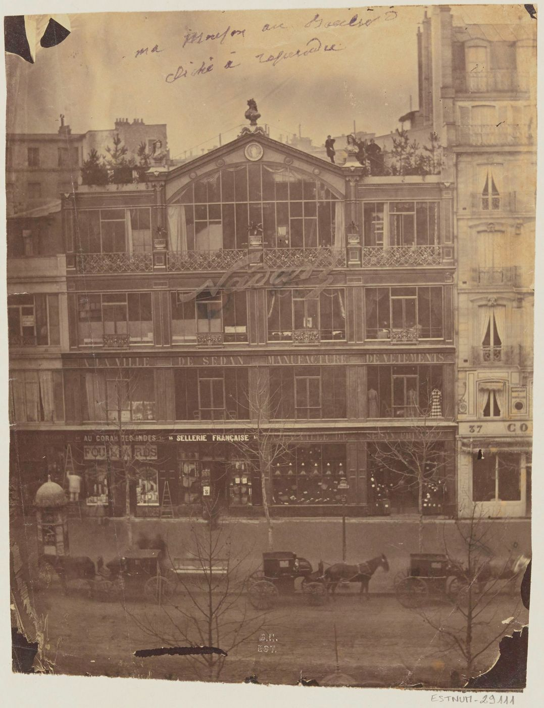
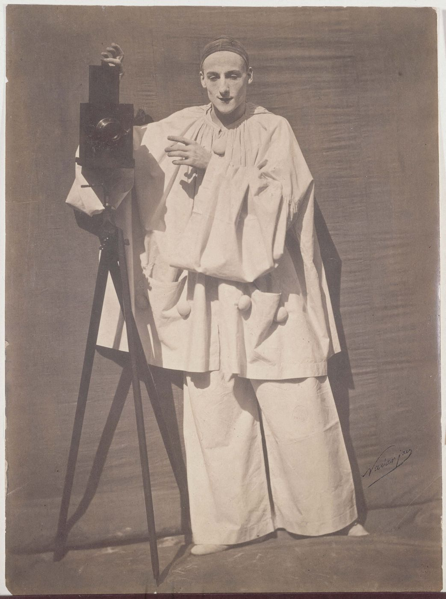
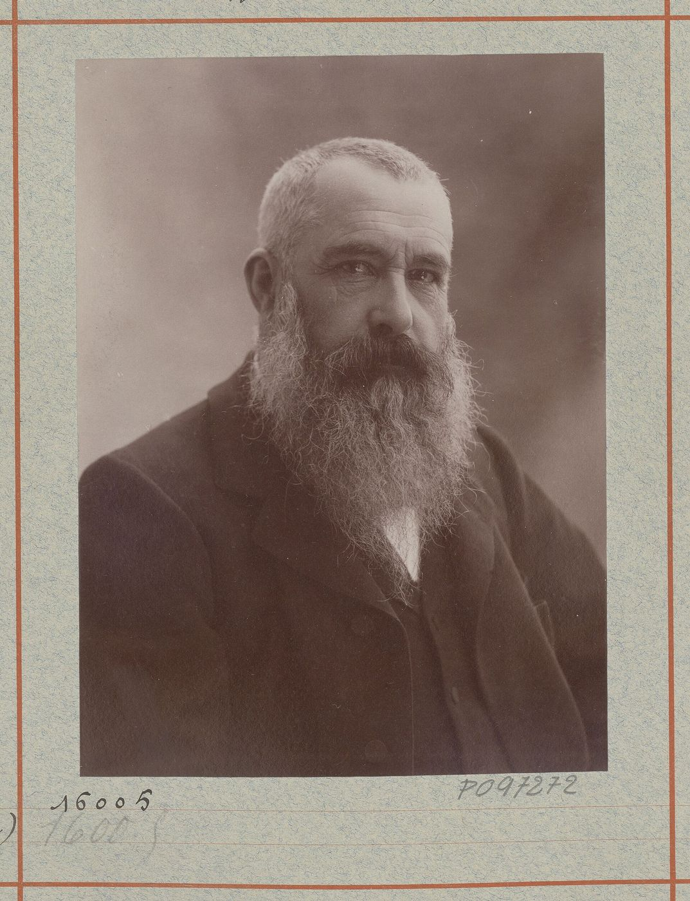
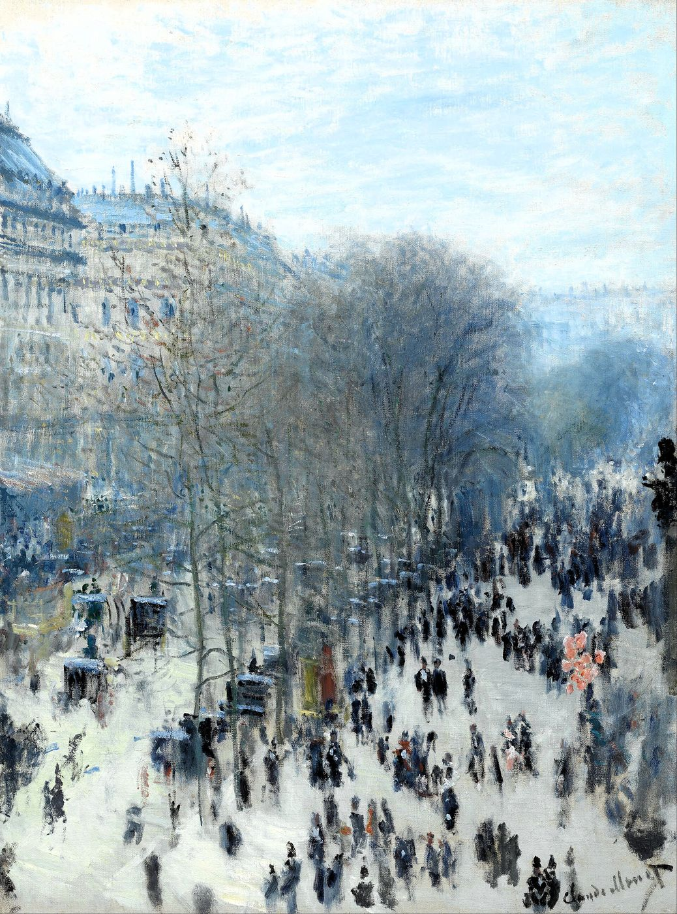
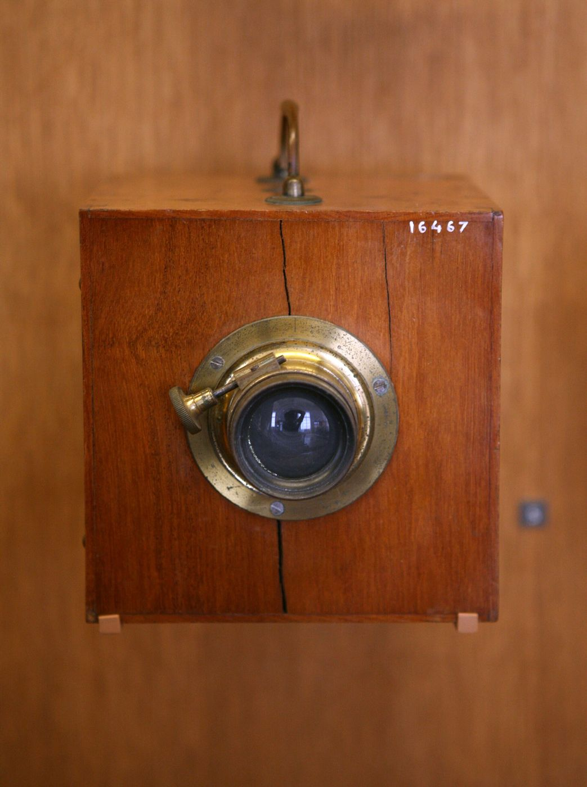


공간 구성
전시관 입구에 가벽을 세우고 〈인상, 해돋이〉 한 점만 겁니다. 가벽 뒤 세 면에는 모네의 연작을 액자 없이 캔버스로 걸고 뒤에서 은은하게 빛이 번지게 합니다. 출구 쪽 벽에는 "왜 같은 풍경을 계속 그렸을까?"를 두어 3층으로 이어지게 합니다. 〈인상, 해돋이〉 옆에는 1874년 전시 카탈로그의 실제 항목 번호 "98. Impression, Soleil levant"를 살린 작품 라벨을 둡니다.
미션 문구는 1874년 4월 25일 『르 샤리바리』에 실린 루이 르루아의 비평에서 가져옵니다. 이 조롱에서 '인상주의'라는 이름이 나왔다는 이야기가 전시관의 중심입니다.
체험 플로우
- 질문 열기QR을 찍으면 1874년 비평가의 혹평 문구가 뜹니다.
- 그림 비추기전시된 모네의 그림을 앱 카메라로 비추면 인식되고, 그 그림의 정보가 나옵니다.
- 정답〈인상, 해돋이〉를 찾으면 화면 속 그림이 살아 움직이고, '인상주의'라는 이름의 유래가 공개됩니다.
수집품 인상, 해돋이
공간 근거 자료
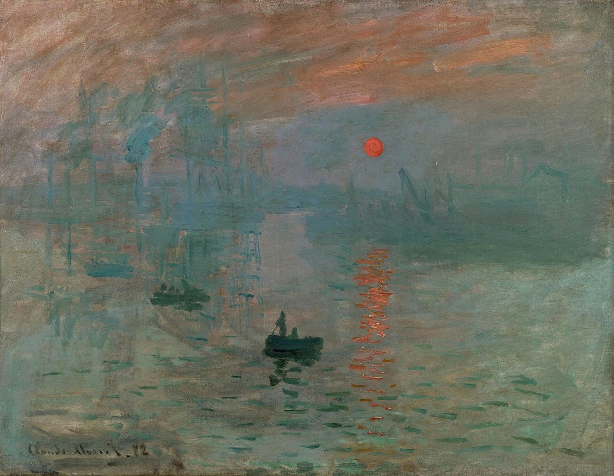
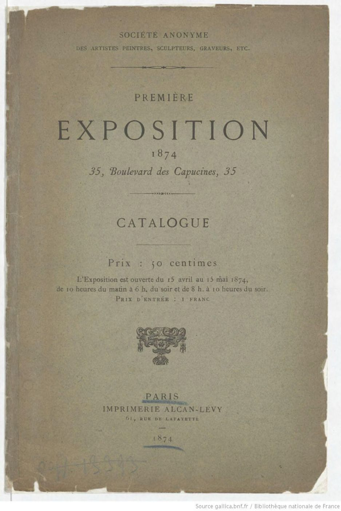
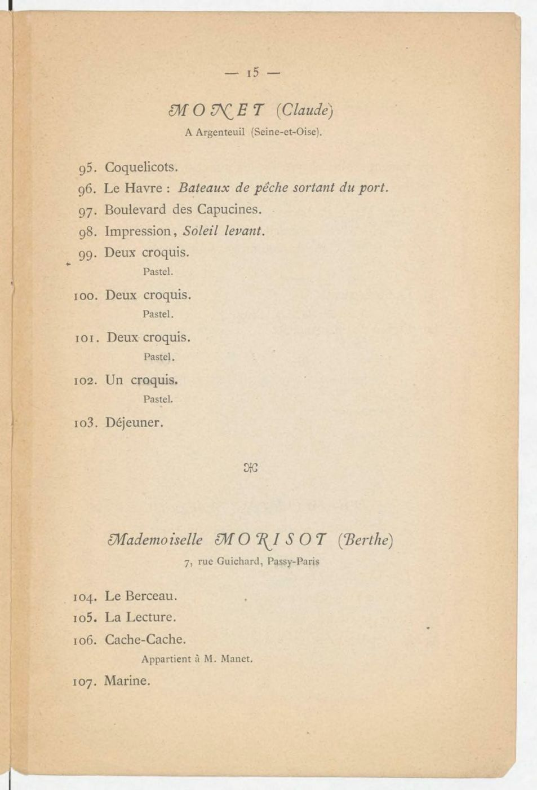